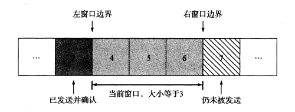
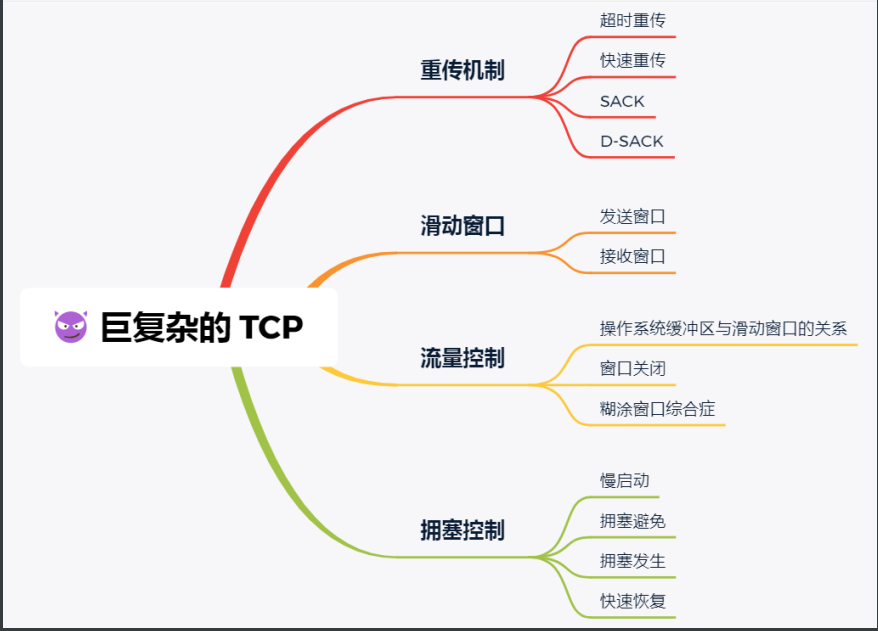
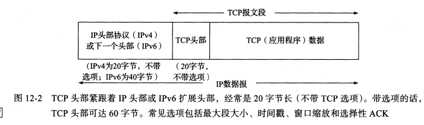
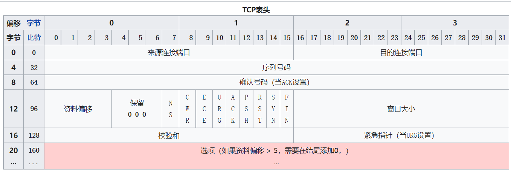

[TCP/IP详解]:TCP初步
一、概念介绍
1. ARQ与重传
ARQ
自动重复请求(automatic repeat request, ARQ), 是一种错误纠正机制，简单的说就是自动重传，TCP就使用了这种机制
ACK
考虑在互联网上分组丢失的情况, 最直接的方法就是使用ARQ，重新传递分组
通常, 接收方在接收到发送方发送过来的分组后，会向原发送方发送一个**ACK(acknowledge)**分组，用于确认自己已经接受到了一个分组
有关ACK会引出一系列问题 :
发送方对于一个ACK应该等待多长时间
难以判断
如果ACK丢失了怎么办
对于发送方而言，ACK丢失与原分组丢失这两种错误是无法区分的，所以发送方的基本操作就是重新发送分组
接收方接收到的分组发生了差错怎么办
分组中会包含检验和，接收方计算检验和之后，如果发现差错，那么就不发送ACK
接收方接收到了重复分组怎么办
由于重传机制，接收方有可能收到重复的分组，使用序列号机制可以进行处理
序列号
为每个分组分配一个序列号，当重新发送分组时，序列号不会改变，接受方可以通过查看序列号来判断它时候接受过这个分组
重传时间
通常情况下，协议会尝试估计分组的RTT, 并将该时间设置为重传时间
2. 滑动窗口
发送方和接收方必须要维护他们所发送或者接受的分组，可以采用一种
分组窗口的机制来进行维护分组窗口(发送方)
发送方的窗口如下

- 窗口内的分组处于已发送但是未收到ACK的状态
- 窗口左边的分组处于已发送并且收到ACK的状态, 此时表明该分组已经传达完毕，发送方不需要继续保存它的副本以准备重传
- 窗口右边的分组处于仍未被发送的状态
如果一个窗口内的分组(如4)接收到了ACK, 此时窗口就会减小，仿佛向右滑动了一个分组一样，因此该机制又被称为滑动窗口
接收方也有类似的窗口，在这里不做过多的解释
3. 流量控制
有时会发生接收方的接收速率相对于发送方的发送速率太慢的问题，此时就需要进行流量控制，有两种流量控制的方式:
基于速率
接收方给发送方指定某个速率，确保发送发送速率不能超过这个值
基于窗口
这种方法比较流行，基本思想是通过接收方通知发送方窗口大小来控制流量速率，这种通知的操作被称为窗口更新，也叫作窗口通告
通常接受方会在发送ACK时捎带窗口更新的信息
二、TCP介绍
简介
TCP是传输层协议，提供面向连接的可靠字节流服务，字节流表示TCP发送消息时不会在消息中插入消息结束的标记，也表明了对于
数据字节流的解释将完全依靠应用程序
1. 可靠性
分组
TCP会将来自应用程序的数据拆成适合大小的多个分组来发送，接收方最终会将这些分组进行组合
这些分组会包含序列号，每个分组的序列号就是其第一个字节在整个数据流中的字节偏移
由TCP传递给IP的分组被称为报文段(segment)
检验和
TCP强制维护了一个检验和字段，任何带有无效检验和的报文到达都会被直接丢弃
ACK
当接收方接收到另一方的数据时，会发送ACK，而TCP的ACK不是立即发送，而是采用累计策略
一般来说，当发送方收到序列号为N的ACK分组时，表明该序号为N之前的所有字节均已被完全接收，
但是如果某个序列号小于N的ACK丢失了， 那么可能就会发生误判
重传
TCP一次性发送一个窗口数目的报文段，并且为这一组报文段设置一个计时器用于超时重传
全双工
TCP是全双工的，这意味着数据可以沿两个方向流动
有关TCP的特性如下图

2. TCP头
- TCP在IP数据报中的封装

TCP头

关于具体bit的讲解可以看wiki
3. TCP中的计时器
每当建立一个TCP连接，TCP都会维护四个计时器，后面我们会一一讲解
重传定时器使用于当希望收到另一端的确认
持续计时器使窗口大小信息保持不断流动，即使另一端关闭了其接收窗口
保活计时器检测到一个空闲连接的另一端何时崩溃或重启
2MSL定时器测量一个连接处于TIME_WAIT状态的时间
本博客所有文章除特别声明外，均采用 CC BY-SA 4.0 协议 ，转载请注明出处！